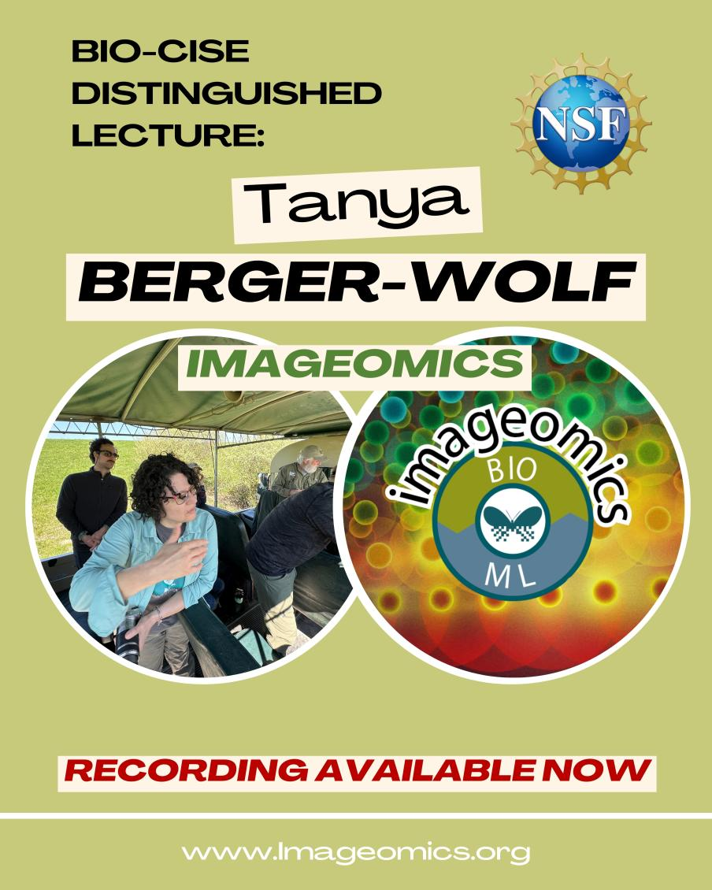

The National Science Foundation (NSF) recently hosted a distinguished lecture by Tanya Berger-Wolf, a pioneering figure in the emerging field of Imageomics.
The event, part of the BIO-CISE Distinguished Lecture Series, underscored the transformative potential of artificial intelligence (AI) in biological sciences.
Berger-Wolf, a professor of Computer Science Engineering, Electrical and Computer Engineering, and Evolution, Ecology, and Organismal Biology at the Ohio State University, is also the Director of the Translational Data Analytics Institute. As a computational ecologist, her research is at the unique intersection of computer science, AI, wildlife biology, and social sciences.
A link to the final recording is now available online.
In her discussion, Berger-Wolf detailed how AI technologies, such as machine learning, are revolutionizing our understanding of nature. Her lecture, titled "AI for Nature: From Science to Impact," introduced Imageomics—a novel discipline leveraging AI to extract biological traits from images of organisms. The new approach enables unprecedented insights into biodiversity and conservation efforts.
Supported by NSF grants, including the Imageomics Institute and the AI and Biodiversity Change Global Climate Center, Berger-Wolf's work exemplifies the NSF's commitment to advancing interdisciplinary research. Her contributions through the Translational Data Analytics Institute at Ohio State and her role in various national and international scientific boards highlight her leadership in the scientific community.
The NSF's Distinguished Lecture Series, featuring experts like Berger-Wolf, continues to foster innovation and collaboration, emphasizing the critical role of advanced technologies in addressing global challenges.
Berger-Wolf is a member of the US National Academies Board on Life Sciences, US National Committee for the International Union of Biological Sciences (IUBS), and the Advisory Committee for the Global Partnership on AI (GPAI) AI on Biodiversity working group, among many others. She is also a co-founder of the AI for conservation non-profit Wild Me (now part of the Conservation X Labs), home of the Wildbook project, which has been chosen by UNSECO as one of the 100 AI projects worldwide supporting the UN Sustainable Development Goals.